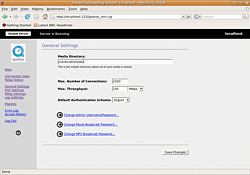

Darwin Streaming Server
Archivierte Anleitung
Dieser Artikel wurde archiviert, da er - oder Teile daraus - nur noch unter einer älteren Ubuntu-Version nutzbar ist. Diese Anleitung wird vom Wiki-Team weder auf Richtigkeit überprüft noch anderweitig gepflegt. Zusätzlich wurde der Artikel für weitere Änderungen gesperrt.
Artikel für fortgeschrittene Anwender
Dieser Artikel erfordert mehr Erfahrung im Umgang mit Linux und ist daher nur für fortgeschrittene Benutzer gedacht.
Zum Verständnis dieses Artikels sind folgende Seiten hilfreich:
Beim Darwin Streaming Server  (DSS) handelt es sich um die freie Variante des kommerziellen Quicktime-Servers von Apple. Der DSS eignet sich für On-Demand-Streaming, bei dem die Audio/Videodaten bereits in kodierter Form (als Datei) vorliegen und auf Aufruf seitens eines Nutzers ausgespielt werden. In Verbindung mit dem Live-Encoder "mp4live" aus dem mpeg4ip-Projekt kann er aber auch für Live-Streaming-Anwendungen (z.B. Internet-TV) verwendet werden. Darüber hinaus verfügt der DSS über eine Web-Oberfläche, die eine einfache Konfiguration - auch von einem anderen Rechner aus - ermöglicht.
(DSS) handelt es sich um die freie Variante des kommerziellen Quicktime-Servers von Apple. Der DSS eignet sich für On-Demand-Streaming, bei dem die Audio/Videodaten bereits in kodierter Form (als Datei) vorliegen und auf Aufruf seitens eines Nutzers ausgespielt werden. In Verbindung mit dem Live-Encoder "mp4live" aus dem mpeg4ip-Projekt kann er aber auch für Live-Streaming-Anwendungen (z.B. Internet-TV) verwendet werden. Darüber hinaus verfügt der DSS über eine Web-Oberfläche, die eine einfache Konfiguration - auch von einem anderen Rechner aus - ermöglicht.
Folgende Formate werden unterstützt:
MPEG-4
H.264/AVC
MP3
Der Darwin Streaming Server unterliegt der Apple Public Source License (APSL) und darf gemäß den Lizenzbestimmungen nicht kommerziell genutzt werden. Für kommerzielle Anwendungen wird eine Lizenz des Quicktime Streaming Servers benötigt. Die Nutzung des Darwin Streaming Servers für private Zwecke ist dagegen ohne Einschränkungen zulässig.
Vorbereitung¶
 Für die Installation des DSS müssen die folgenden Pakete [1] installiert sein:
libstdc++5
 mit apturl
mit apturl
Paketliste zum Kopieren:
sudo apt-get install libstdc++5
sudo aptitude install libstdc++5
Um den DSS nach der Installation testen zu können, wird außerdem ein geeigneter Player für die Wiedergabe benötigt. Dieser kann entweder lokal auf dem Server oder noch besser auf einem zweiten Rechner, der mit dem Server vernetzt ist, installiert sein. Vorgeschlagen wird an dieser Stelle die Installation des Mediaplayers VLC, aber es kommen sicherlich auch andere Player mit MPEG-4 Unterstützung in Frage.
Installation¶
Hinweis:
Während der DSS früher als vorkompiliertes Archiv, inzwischen aber nur noch im Quelltext verfügbar ist, gilt der Abschnitt "Vorkompiliertes Archiv" für den DSS 5.5.5 und der Abschnitt "Installation aus dem Quelltext" für den DSS 6.0.3.
Vorkompiliertes Archiv¶
Der DSS ist nicht als fertiges Paket für Ubuntu oder Debian verfügbar, sondern muss von Mac OS Forge heruntergeladen werden. Der für die hier ursprünglich beschriebene Installation benötigte Download des DSS 5.5.5 wurde inzwischen durch den Quellcode des DSS 6.0.3 ersetzt, ist aber immer noch verfügbar: die Datei DarwinStreamingSrvr5.5.5-Linux.tar.gz  herunterladen und anschließend im Homeverzeichnis entpacken [4] .
herunterladen und anschließend im Homeverzeichnis entpacken [4] .
Hinweis!
Fremdsoftware kann das System gefährden.
Nach dem Entpacken wird ein Terminal [3] geöffnet und darin folgende Befehle ausgeführt:
cd DarwinStreamingSrvrlinux-Linux sudo addgroup --system qtss sudo adduser --system --no-create-home --ingroup qtss qtss
Nun wird noch der Befehl
sudo ./Install
ausgeführt.
Installation aus dem Quelltext¶
Als erstes benötigt man den Quelltext der Version 6.0.3 von Mac OS Forge . Die Datei DarwinStreamingSrvr6.0.3-Source.tar herunterladen und anschließend im Homeverzeichnis entpacken [4] . Vor dem Kompilieren muss man allerdings unbedingt noch diesen Patch einspielen, da ansonsten die Kompilierung scheitert. Dies geschieht durch:
patch <patch
Nun kann man durch
./Buildit cd DarwinStreamingSrvr6.0.3-Linux sudo ./Install
den Server kompilieren und anschließend installieren.
Verzeichnisse¶
Die nachfolgende Tabelle zeigt eine Übersicht der wichtigsten Dateien und Verzeichnisse des DSS:
| /usr/local/sbin/DarwinStreamingServer | Die Server-Software |
| /usr/local/sbin/streamingadminserver.pl | Perl-Skript für das Web-Frontend |
| /etc/streaming/ | Konfigurationsverzeichnis |
| /etc/streaming/streamingserver.xml | Konfigurationsdatei des Servers |
| /var/streaming/logs | Verzeichnis für Logdateien |
| /usr/local/movies | Default-Verzeichnis für die Videofiles |
Anschließend der Datei /etc/streaming/streamingserver.xml durch folgenden Befehl noch Schreibrechte zuweisen, da sonst keine Konfiguration gespeichert werden kann:
sudo chmod 755 /etc/streaming/streamingserver.xml
Konfiguration und Test¶
Die Konfiguration des DSS erfolgt über eine Web-Oberfläche und wird im Browser mit:
http://<Server-IP>:1220
aufgerufen. Nach Anmeldung als Administrator mit den bei der Software-Installation gewählten Login-Daten können nun weitere Einstellungen vorgenommen werden. Beim erstmaligen Aufruf der Seite werden zunächst folgende Informationen abgefragt:
MP3 Broadcast Password
Secure Administration
Media Folder:
/usr/local/movies/Streaming on:
Port 80
Wichtig ist hier erstmal nur, dass der Pfad zu den Videodateien (Media Folder) korrekt angegeben wird, alle übrigen Fragen können getrost mit dem "Next"-Button übersprungen werden. In dem vorgegebenem Verzeichnis /usr/local/movies/ liegen bereits einige Demo-Videos, die für erste Funktionstests verwendet werden können. Es ist daher sinnvoll, diese Vorgabe zu übernehmen, Änderungen sind später jederzeit über das Konfigurationsmenü möglich. Nach Festlegung dieser vier Punkte erscheint schließlich die Konfigurationsmaske für den DSS, in der weitere Einstellungen vorgenommen werden können. Die Konfiguration wird durch "Log Out" (linke Spalte unten) wieder verlassen.
Nun kann getestet werden, ob der DSS auch wie gewünscht funktioniert. Dazu wird der Mediaplayer VLC geöffnet und unter dem Menüpunkt "Datei -> Netzwerkstream öffnen" folgende Streamadresse eingegeben:
rtsp://<Server-IP>/sample_100kbit.mp4
Sofern alles korrekt installiert ist, sollte jetzt eines der mitgelieferten Beispielvideos zu sehen sein. Herzlichen Glückwunsch! 
Server starten¶
Beim Hochfahren des Rechners wird der DSS nicht automatisch gestartet, sondern Server und Web-Interface müssen entweder in einem Terminal über die beiden folgenden Kommandozeilen
sudo /usr/local/sbin/DarwinStreamingServer sudo /usr/local/sbin/streamingadminserver.pl
oder über entsprechende Einträge im Startmenü manuell aufgerufen werden. Wie sich Server und Web-Interface bei Bedarf automatisch starten lassen, ist in der Einleitung des Beitrags Autostart beschrieben.
Alternativ kann auch folgendes Skript dss benutzt werden (getestet mit DSS 6.0.3):
# Provides: dss
# Required-Start: $network $local_fs
# Required-Stop: $network $local_fs
# Default-Start: 2 3 4 5
# Default-Stop: 0 1 6
# Short-Description: dss utils
### END INIT INFO
#Quelle: http://forum.ubuntuusers.de/post/2169291/
#Dateiname: dss
#Dieses Script startet den Darwin Streaming Server automatisch
#beim Einschalten des Servers.
#########################################################
# Starten und Stoppen des DSS #
#########################################################
case "$1" in
start)
if test -r /var/lock/dssd
then
echo "Lockfile /var/lock/dssd exists. Server not started."
failure
else
echo "Starting Darwin Streaming Server: "
/usr/local/sbin/streamingadminserver.pl
touch /var/lock/dssd
echo "Darwin Streaming Server started..."
fi
;;
stop)
echo "Stopping Darwin Streaming Server: "
[ -f /var/lock/dssd ] || exit 0
echo "stopping..."
killall streamingadminserver.pl
rm -f /var/lock/dssd
echo
;;
restart)
$0 stop
sleep 1
$0 start
;;
*)
echo "Usage: $0 [start|stop|restart]"
exit 1
esac
exit 0Anschließend wird das Skript in die entsprechenden Runlevel eingebaut:
sudo cp dss /etc/init.d sudo update-rc.d dss start 25 2 3 4 5 . stop 60 0 1 6 . sudo /etc/init.d/dss start
MPEG-4 Video Streaming¶
Für die Nutzung des DSS als Video-on-Demand Server werden Videos im MPEG-4-Format (Dateiendung .mp4) benötigt. Ein solches Video lässt sich z.B. mit Hilfe der unter Videobearbeitung oder DVDs rippen aufgeführten Tools erstellen. Videos im Quicktime-Format (.mov) könnten ebenfalls verwendet werden, sind aber vermutlich weniger interessant.
Bevor allerdings ein MPEG-4 Video mit dem DSS gestreamt werden kann, müssen vorab noch sog. Hint-Tracks in den Datenstrom eingefügt werden. Diese sind erforderlich, um einen schnellen Vor- und Rücklauf des Videos zu ermöglichen. Für das Einfügen der Hint-Tracks existiert z.B. das Tool MP4Box , das im Paket
gpac (multiverse [2] )
mit apturl
Paketliste zum Kopieren:
sudo apt-get install gpac
sudo aptitude install gpac
enthalten ist [1]. Die Syntax für den Befehlsaufruf zum Einfügen der Hint-Tracks lautet:
MP4Box -hint dateiname.mp4
Mit der Option -unhint lassen sich die eingefügten Informationen auch wieder entfernen. Alternativ lassen sich die Hint-Tracks auch mit dem Tool "mp4creator" aus dem MPEG4IP-Projekt einfügen.
Nach dem Einfügen der Hint-Tracks muss die Videodatei nur noch in das Videoverzeichnis des DSS kopiert oder verschoben werden, unmittelbar danach steht das Video zum Abruf bereit. Ggf. kann über die Web-Oberfläche zusätzlich noch eine Playliste erstellt werden.
MP3 Audio Streaming¶
Mit dem DSS lassen sich nicht nur MPEG-4 Videos, sondern auch MP3-Audiodateien streamen. Wie man MP3 Dateien erstellt, ist z.B. in dem Beitrag CDs rippen beschrieben. Um vorhandene MP3-Dateien zu streamen, müssen zunächst Playlisten angelegt werden, was dank des Web-Interfaces aber relativ schnell erledigt ist. Ein Anleitung dazu findet sich hier  .
.
Ein MP3-Player findet die erstellen Playlisten unter der Adresse
http://<Server-IP>:8000/Mountpunkt
- Erstellt mit Inyoka
-
 2004 – 2017 ubuntuusers.de • Einige Rechte vorbehalten
2004 – 2017 ubuntuusers.de • Einige Rechte vorbehalten
Lizenz • Kontakt • Datenschutz • Impressum • Serverstatus -
Serverhousing gespendet von